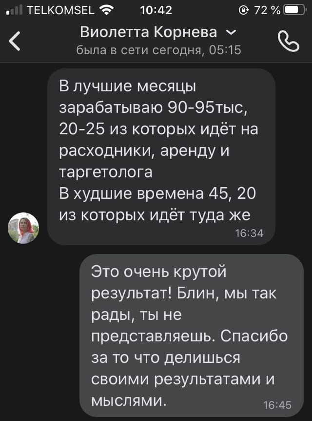
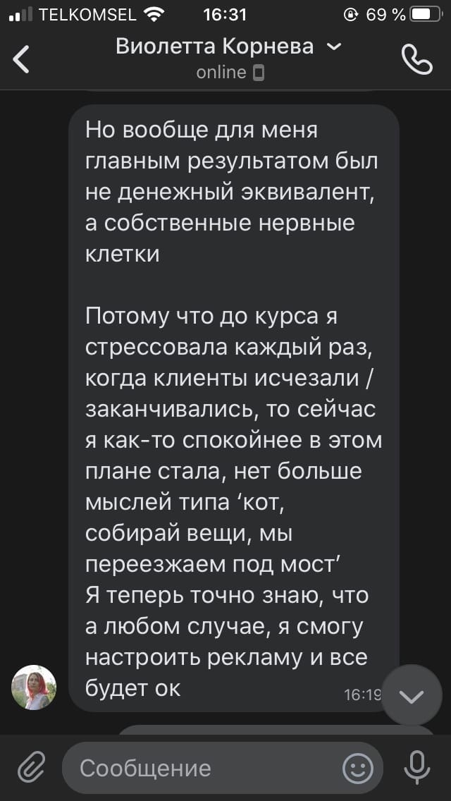

Виолетта Корнева. Тату-мастер из Санкт-Петербурга. Проходила мой самый первый поток курса в декабре 2018 года.
Сколько тратит на рекламу? Как часто пишет посты? Сложно ли было научиться продвижению?
До знакомства со мной подумывала завязать со своим ремеслом, так как доход был очень нестабильный.
Она уже размышляла устроиться на "нормальную работу". Нервы. Постоянные думки, чем платить за квартиру, на что покушать
"Главным результатом был не денежный эквивалент, а собственные нервные клетки"
Виолетта Корнева
Перед обучением очень боялась таргетированной рекламы и не знала как с ней разобраться. Но все получилось.
И вот видео-отзыв от Виолетты, в котором она поделилась впечатлением о курсе ВК-Бабло сразу же после его прохождения.
Видео отзыв о курсе ВК-Бабло от Виолетты Корневой
Во время курса она заработала 20 000 руб.
В конце обучение у неё была система привлечения клиентов из ВК. И понимание как работает реклама.
Спустя несколько месяцев уже зарабатывает 45 000 — 95 000 руб/мес. Стабильно.

Блин, я так рада за неё!)))
Когда работы стало много, а времени мало, она смогла позволить себе таргетолога. И удачно работала с ним, потому что сама разбиралась в таргете, могла поставить задачу, принять результат. А с такими навыками можно и новичка нанять не дорого.

Но уехала красавица!
Научившись основам маркетинга и продаж, Виолетта обрела уверенность в себе. Уверенность в том, что может найти клиентов где угодно. Вскоре она покинула славный город Санкт-Петербург и уехала за границу.
Теперь она находит клиентов в других соцсетях, в другой стране. И это легко, когда ты знаешь базовые принципы маркетинга и продаж. Они работают везде и всегда. Именно таким фундаметальным навыкам я обучаю а курсе ВК-Бабло.
Последний раз я видела её в Грузии, во время одного из моих путешествий. Дела у Виолетты идут нормально. Говорила, что хочет поехать еще в какую-нибудь другую страну.
Ведь теперь она точно знает, что без клиентов не останется нигде.
Мир нужно посмотреть. В этом я с Виолеттой солидарна. Пожелаем ей удачи!